Everything a build records is browsable. This chapter walks the pages a developer opens: Producers and their version lines, the spec viewer, Consumers and their pins, the dependency graph and the reports. The admin page is Administration in the Operator track.
What changed in 2.6.0
catalog-info.yaml.
/ needs no login, and it is where a sign-in lands. Its dashboard shows how many
Producers, Consumers and versions the instance holds, the provides of the last 7 days, and a bar
per day of the last 30 days, without naming anything. A signed-in user also sees the 10 latest
provides with Producer, version, who provided it and when. The numbers are
GET /api/dashboard, the list GET /api/dashboard/recent.
Its Try it form is the
validator: paste an OpenAPI, AsyncAPI or Protobuf
document and Sanshain runs exactly the provide-side checks, version extraction and endpoint
splitting, and shows the version it read and a preview of the endpoints it would store. Nothing is
saved. The same check is POST /validate, unauthenticated. A
Documentation card links these pages for the release the instance runs
(…/sanshain-service/v<version>/), so what you read matches what it does.
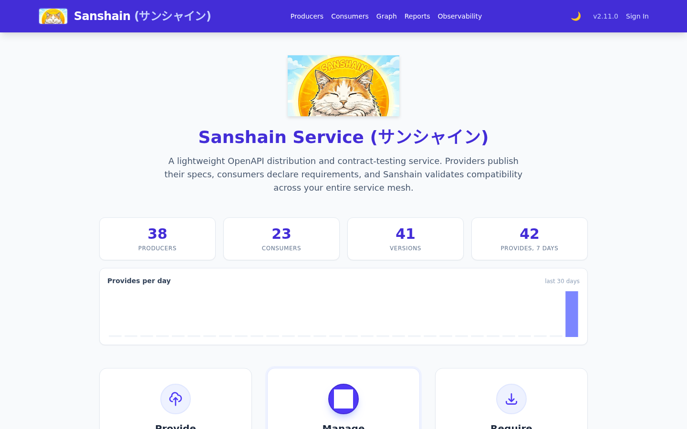
/account.html is where you change your password and mint
API tokens: a name, an expiry in days, and the
Read-only (for AI / MCP clients) box that sets the scope to
read_only. The raw token is shown once. The list below shows every token you own with
its scope, its expiry and when it last authenticated a request, to the minute, and lets you revoke
it. Holders of manage_users also get a For choice that issues the
token for a service account; their
list then shows every service-account token too, marked For jenkins · issued by alice,
and any of them can revoke it. The star next to a Producer on the Producers page marks it as one
of your favourites.
Signed out, the page is the sign-in card. It follows the instance's settings: the Register tab only while registration is open, a note that the account is ready at once when new accounts are acknowledged automatically, Sign in with SSO only while OIDC is the sign-in mode, and a notice when only administrators can sign in (Off, Dev).
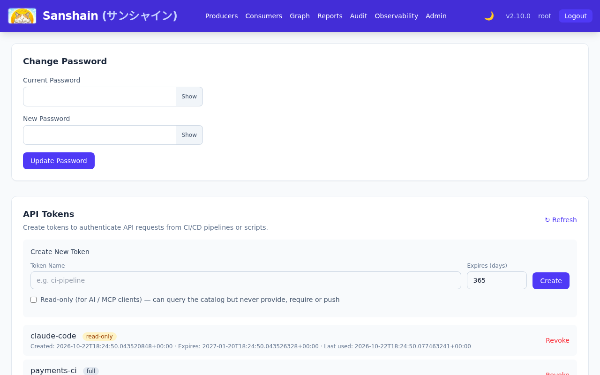
/producers.html lists every
Producer with a search box. A Producer opens to its
version lines, one card per API type, each version a row with its
stability, endpoint count, who provided it and
when. Badges on a row:
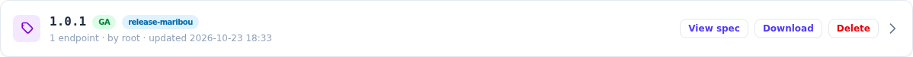
Expanding a row lists the endpoints of that version, each with the one line the Producer wrote
about it (an OpenAPI summary or the first sentence of its description, a
message summary, the comment above a proto rpc), a deprecated
badge where the spec marks it and a count of the Consumers that pin it; clicking one opens its
snippet in the spec viewer, where it can be copied or
downloaded. View spec opens the whole document in the viewer;
Download saves it; Delete is the audited escape hatch for admins
and the Producer's maintainers, and it lists the pinned Consumers and referencing branches before
asking for confirmation.
The endpoints are listed by path, then method. The filter above them matches every word typed
against the path, the method and the summary (post cart finds
POST /carts); the chips All, Used and
Unused narrow the list by whether a Consumer pins an endpoint, and
Deprecated combines with them. The filter is kept in the address, so Back from an
endpoint returns to the filtered list and the link can be shared.
Under the Producer's title, when its build pushed a catalog-info.yaml, the page shows
the catalog context: the owner (team-orders (group)), the description, and a row of
chips: the repository first, labelled by the host of its source location, then the Backstage links
by their title. Below it, maintainers and administrators see the Webhooks card:
signed POSTs for this Producer's events (new versions, rejected provides, deprecations, new
Consumers, catalog pushes) with a delivery log per hook.
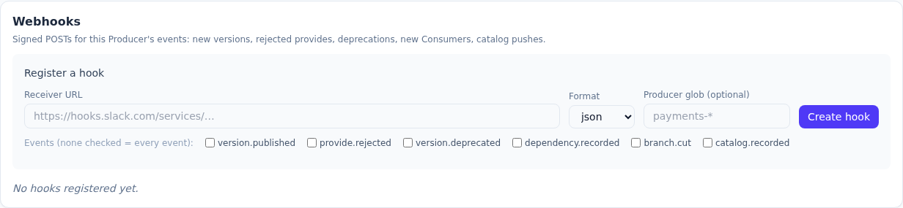
The viewer shows one document, or one endpoint of it, with its Version History down the side: every version of the line, its stability and provider, marked changed where the text differs from the version before. Pick two versions in Compare / Diff; switch Blame on to see, for every line, the version that last changed it, and, where the providing build said so, why: the diff header and every blame block carry the version's origin. Copy and Download act on what is shown.
A diff has two switches. Ignore whitespace (off by default, per view) drops indentation and trailing-space changes; it exists for whole documents only, because endpoint snippets are re-serialised when a spec is split, so the endpoint view has no such switch. Unified / Side by side: side by side is the default on wide screens, the choice is remembered per browser, and screens narrower than 768 px always show unified. The same diff appears on the Producers page and in the admin dashboard.
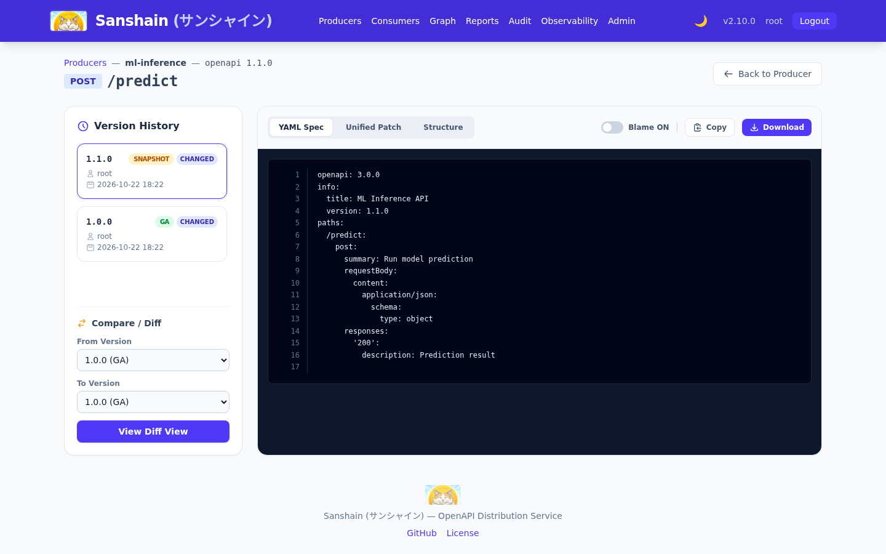
Structure, next to the YAML and the patch, shows an OpenAPI or AsyncAPI version
as a foldable tree instead of text: per endpoint its parameters by location (path, query,
header, cookie), the request body and the responses per status and media type, or for AsyncAPI
the messages with their headers and payload. Every $ref is opened in place under
its schema's name; allOf parts are merged into one member list, each member saying
which part it came from; oneOf and anyOf show one entry per
variant and the discriminator; a schema that contains itself stops at "↻ Name, see above".
A member shows its name, type and format, whether it is required, deprecated, nullable, read-only or write-only, its description, default, example, allowed values and constraints. Every node carries the version that last changed it, counted along the line up to the version shown; a version chip in amber is a change made in this very version, and inside: X on a folded node says something below it changed later than the node itself. Reformatting a spec changes nothing; a renamed member counts as a new one.
Each body has an Example with a Copy button for a curl or a test: the spec's own example where it has one, else one built from the members' examples, defaults, first allowed values and type placeholders. A request example leaves out read-only members, a response example write-only ones. The endpoint view opens the endpoint unfolded; the full-document view lists every endpoint folded and loads one when it is opened. Expand all and Collapse all sit above the tree. The choice between YAML and Structure is remembered per browser; Blame belongs to the text and is hidden here, and Copy and Download still give the YAML. Proto lines have no structure view.
/consumers.html lists every Consumer
and the exact pins it holds: Producer, API type, version and endpoints. The catalog context block
and the Webhooks card work as on the Producer page; a Consumer's hooks receive the events of every
Producer the Consumer currently requires, and are managed by a maintainer of the Producer of the
same name or by an administrator. The endpoints carry their summaries and have the same filter as
a Producer's version, with only the Deprecated chip; a group with no matching
endpoint is hidden.
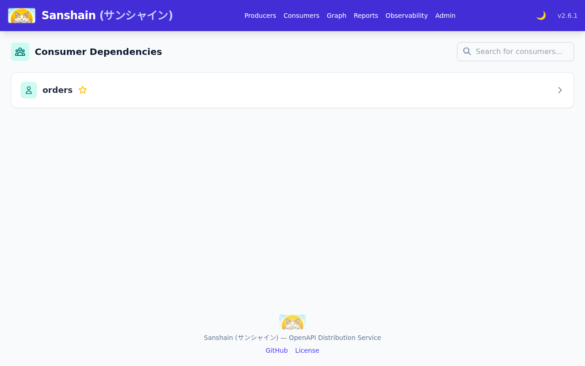
/graph.html renders the graph as an interactive SVG. The toolbar selects one of three
views:
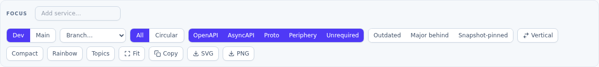
All views share the focus filter (type a service name to spotlight its neighbourhood, or
tag:<name> for every system whose catalog carries the tag), the Circular
layout, the protocol filters (OpenAPI, AsyncAPI, Proto), the Periphery switch for
peripheral resources (remembered in the
browser; a link that hides protocols still decides it), and the
Outdated and Snapshot-pinned highlights. A pin to a
superseded snapshot counts as outdated, and
hovering the edge says superseded by X ga.
Three switches shape the drawing itself and are remembered in the browser rather than in the URL:
Vertical/Horizontal pivots the flow, and
Compact tightens the gaps between nodes and ranks for an install whose graph has
outgrown the screen, Rainbow gives every caller's plain arrows and catalog
dependsOn lines a colour of its own, so a fan-out can be followed through the
crossings: the callers in the graph, sorted by name, take colours as far apart as the hues the
warnings leave free (circular, missing, outdated and stale edges keep their warning colours), and
Topics draws every AsyncAPI channel as a node of its own, publishers pointing at
it and subscribers hanging off it, in place of the direct messaging arrows. A channel the producer
publishes that nobody requires gets its topic too, from the version the view shows; a channel
nobody publishes is a dashed topic, and the topic's panel lists its publishers and subscribers.
Producers that carry a domain sit in a frame per domain. Each domain's nodes are packed as a block and the blocks stand side by side, so frames never overlap, however many domains a catalog brings.
Badges on a node show its protocols in the current view: solid badges on the top edge for what it
provides (braces for REST, two-way arrows for gRPC, an envelope for messaging, a hexagon for a
peripheral resource), outlined badges on the bottom edge for how it requires others. A
harvested subscription to a channel
nobody provides points at a dashed node named <channel> ?. Producers nobody
requires and that require nothing sit as chips in one (unrequired) box beside the
graph when it is taller than wide, below it otherwise, so the drawing squares up; the
Unrequired switch hides the box (remembered in the URL as
hide_protocols=unrequired).
Resting the mouse on a node for two seconds opens its node panel: its version lines, what it provides and requires, and, below that, its catalog context with the owner, the description, the link chips, each opening in a new tab, and the tag chips. A system without a catalog-info shows no such block.
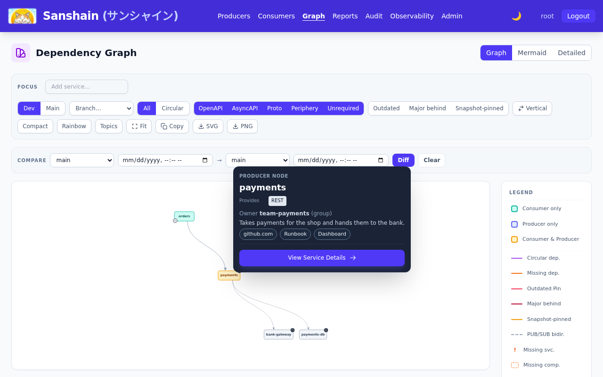
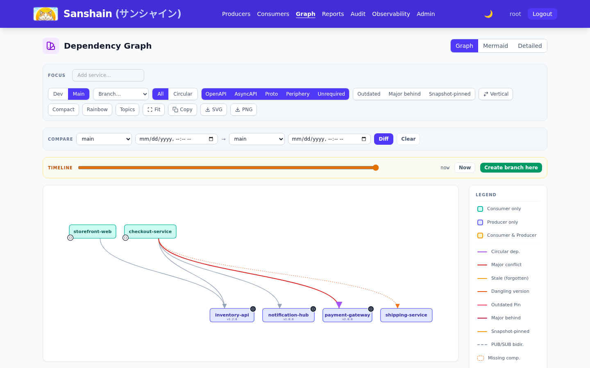
The main view surfaces what the dev view cannot see:
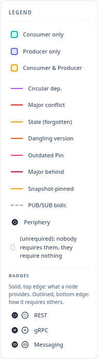
Pick a branch in the toolbar to render its graph. The main and branch views carry a timeline slider whose markers are the instants the graph changed; drag it to see the graph as it was, and, with the releaser role, Create branch here cuts a branch at that instant. The Compare panel diffs any two selections, release against release or against main, either side optionally at a past instant, as services added or removed and pins added, removed or changed. Exports (SVG, PNG, mermaid) are stamped with view, branch and instant. The Release graphs chapter has the model behind these.
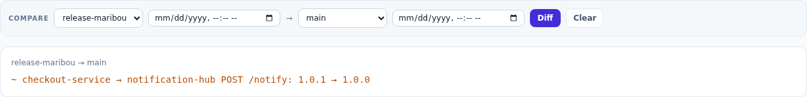
/reports.html offers the Producer isolation report and the full dependency report
(every provided and required endpoint with each dependency's pinned version). Both take a
graph scope: dev,
main or a sanshain-branch, the latter two optionally at an instant, so a
release-scoped report describes what production is. The viewer copies the report as Markdown or
downloads it. The same data is GET /report, /report/markdown and
/report/isolation with ?scope=main[@instant] or
?scope=<branch>[@instant]; a read-only token may read them.
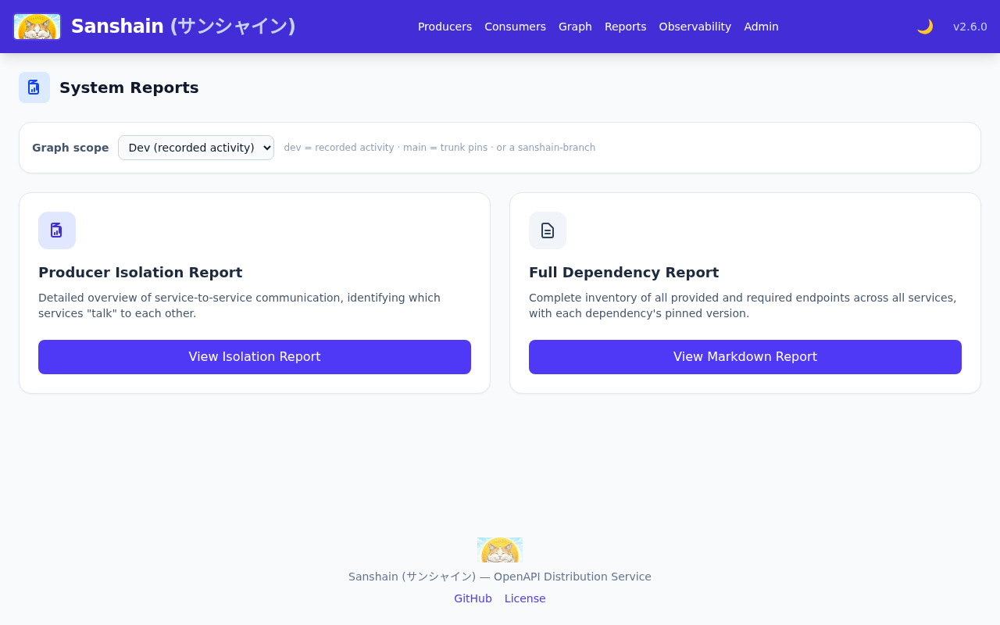
/audit.html is the audit timeline, every
spec update and administrative action with a side-by-side diff, filtered by date, action, service
or version wildcard and stream. It needs the
view_audit permission, held by the admin and viewer roles: the link is hidden from
everyone else and the data behind it is restricted. When a Producer's snapshot you pinned changed
under you, someone with that permission can tell you who provided it.
Checked against v2.6.0.